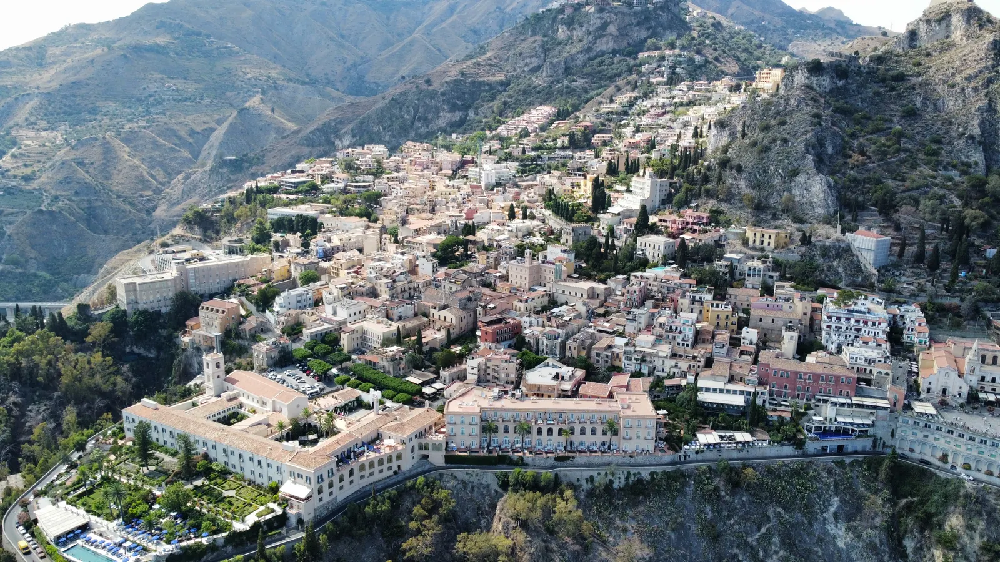

CASE VACANZA TAURO · TAORMINA
Chi siamo
IL TUO PUNTO DI PARTENZA
CHI SIAMO
Un’accoglienza che parla di Taormina
Case Vacanza Tauro nasce per offrirti la libertà di abitare Taormina, in sei appartamenti dai caratteri differenti.

Filicudi, Salina, Vulcano, Panarea, Stromboli e Lipari: sei alloggi che interpretano in modo personale l’ospitalità mediterranea.
Tutti gli ospiti possono utilizzare la terrazza comune attrezzata con sdraio, ombrelloni e doccia.
Scopri i sei appartamenti ↗